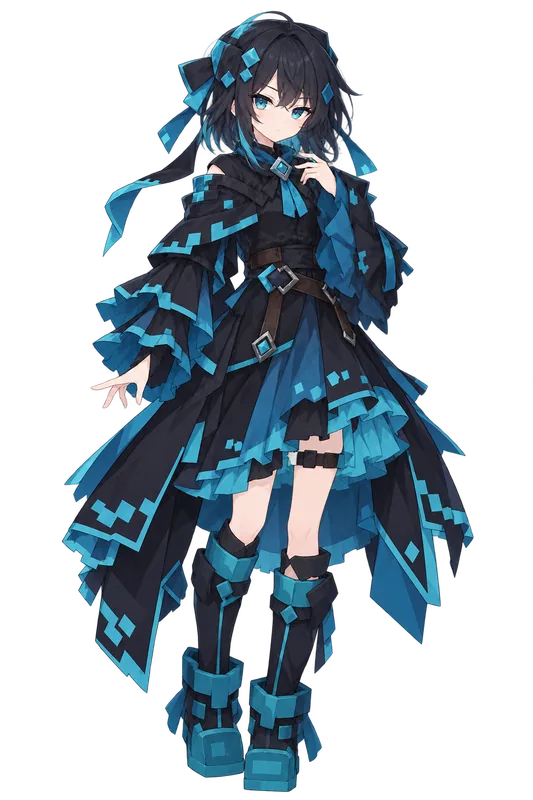
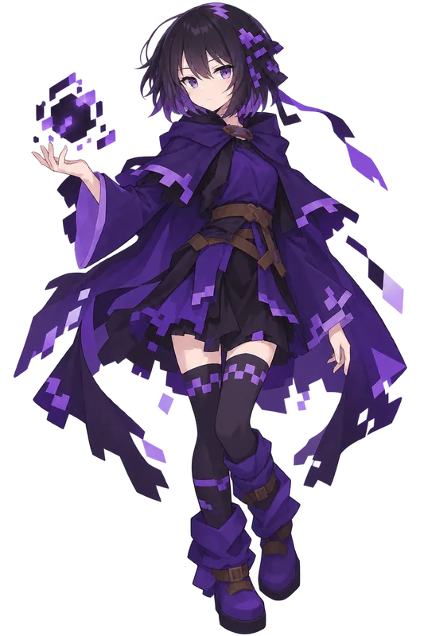
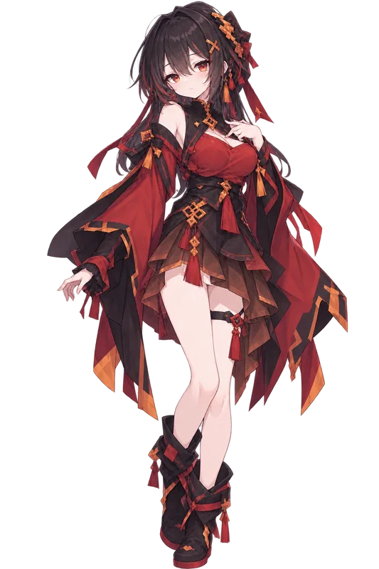
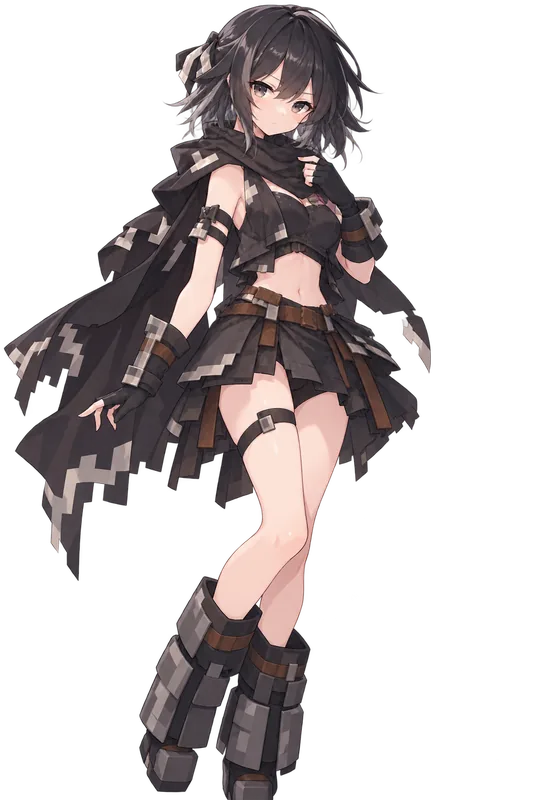

四位自机、六大舞台，与一路上的对手。
出征前从四位自机中选一位。四位的自机弹各不相同——弹条数、扩散角、固定弹是否穿透、有没有追踪弹都按机体分开；弓手的箭从同一点射出，中间那支每隔四秒会变成命中炸开一圈的爆裂箭。自机弹的贴图还会朝自己的飞行方向转正，扇形散开的箭各指各的弹道，出征前不妨各试一把。

以寒霜镰刀与魔导之力贯穿弹幕的魔法使。指尖凝霜成刃，Hyperion 一出鞘，整条地下城走廊都会安静下来。

眼里只有一条弹道的弓手。拉满弓弦的那一瞬，敌机的位置、弹幕的缝隙、风的走向，全在计算之内。

以肉身冲进弹幕里的狂战士。越是被逼到角落越是兴奋，贴着敌机打是她的习惯。

把像素方块当铠甲披在身上的重装。慢，但不会被推走：她站在哪里，哪里就是安全线。
沿天空街一路攀升的猎场。
蛛网与巢穴交织的第一舞台。Boss：Arachne（蛛后）。
巨龙栖息的末地深处。道中 Boss：End Stone Protector；关底 Boss：Ender Dragon。
地下墓穴的第一层。道中 Boss：The Watcher；关底 Boss：Bonzo。
向墓穴深处推进的一段路。道中 Boss：Scarf；关底 Boss：Sadan。
凋零王朝的大本营，接连不断的 Boss 车轮战。Boss：The Watcher、The Professor、Thorn、Livid、Maxor、Storm、Goldor、Necron。
通往凋零之王王座的最后一段路。Boss：The Wither King（Kaeman）。